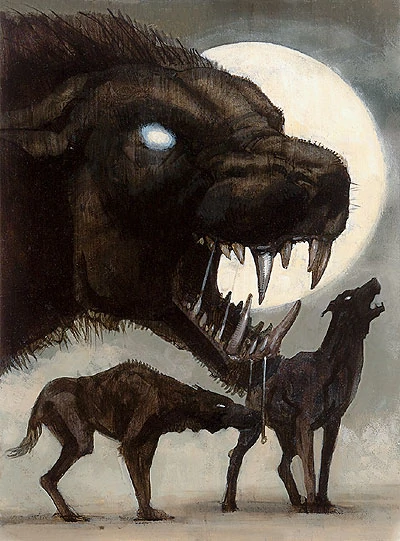
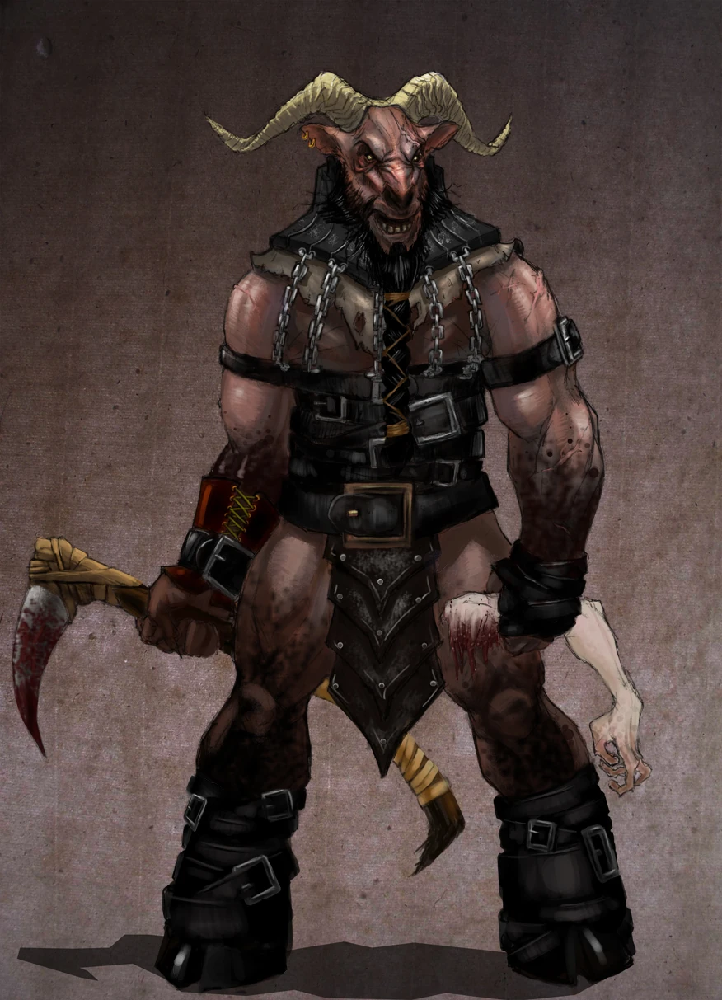
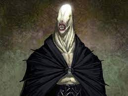

Both major and minor plots of The Wheel of Time are driven by the age-old fantasy genre theme of the battle between good and evil. The appearance, purpose and behavior of the creatures that inhabit this rigid dichotomy make their affiliations quite clear.
The beasts and vaguely-human entities that serve the Dark Lord are savage killers that track their victims with relentless dedication.
| Name | Appearance | Description |
|---|---|---|
| Darkhound |  |
Used by the Shadow to hunt down targets. Their saliva and blood are both poisonous and corrosive, causing bruising and burns. If even a tiny amount of either touches the skin, the victim will die "slowly and in great pain...", and larger amounts will kill a human almost instantly. |
| Trolloc |  |
A horrifying crossing of human and animal stock with physical characteristics of both. While capable of speech and a cruel and twisted humor, they are less intelligent than humans and require supervision in battle. They are carnivorous, as is shown by many references in the first two books of Trollocs eating their human prey, sadistic, fearful, and violent. |
| Myrddraal |  |
They are known by many names across the land, yet these creatures strike fear in equal measure no matter where you may encounter them. Lightning quick, ferociously strong, and murderously cunning. They wield blades forged at Thakan'dar, so deadly even a scratch can take a life — with only an Aes Sedai capable of preventing death. |